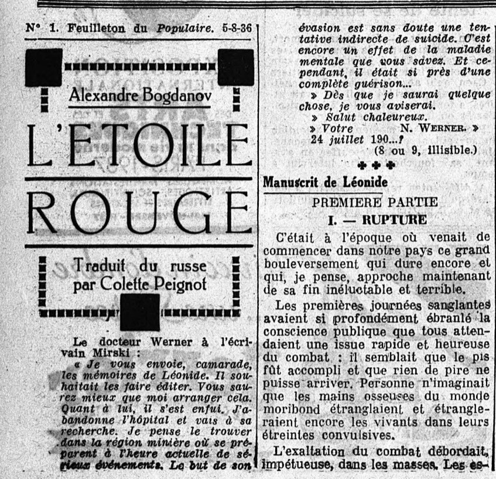

Ce qui frappe d’emblée, c’est que nous avons ici affaire à un titre un peu mystérieux. Commençons donc par un peu de contexte autour du terme “Proletkult” en citant un article paru en 2017 dans Campus, le magazine scientifique de l’Université de Genève (et dont le numéro complet est consultable ici) :
[…] en octobre 1917 [apparaît] une organisation artistique et littéraire méconnue et éphémère mais qui connaît un succès populaire fulgurant : la Culture prolétarienne, ou Proletkult, selon l’acronyme russe. À son apogée, en 1920, le mouvement (qu’il ne faut pas confondre avec l’« art prolétarien » de l’époque stalinienne) revendique 400 000 membres, c’est-à-dire autant, voire plus, que le Parti communiste lui-même. Répartis en 300 sections locales, il édite une quarantaine de journaux et de revues. Il disparaît la même année, dénigré par une partie de l’élite bolchevique et intégré de force au Commissariat du peuple aux lumières (Ministère de l’éducation).
En bref, il s’agit d’une organisation artistique très populaire aux premiers temps de l’Union soviétique, avant d’être intégrée à son administration. Par extension, c’est aussi une page d’histoire méconnue sous nos latitudes, que le collectif d’écrivains italiens Wu Ming a décidé d’explorer. Pour ce faire, ils ont pris pour protagoniste rien de moins le fondadeur du mouvement, Alexandre Bogdanov, également auteur d’un roman de science-fiction paru en 1908 : L’Etoile Rouge (évidemment). Si je mentionne cet obscur livre du début du XXème siècle, description d’une utopie socialiste sur Mars (la planète : rouge), ce n’est pas pour rien car celui-ci va servir de fil rouge (!) à tout le roman qui nous occupe.
Le récit se déroule en 1927, alors que les dix ans de la Révolution approchent. Bogdanov dirige un institut moscovite spécialisé dans les transfusions sanguines (qui, c’est certain, vont permettre d’empêcher le vieillissement humain) et a pris ses distances avec les dirigeants du Parti. C’est alors que débarque à l’institut une jeune fille, Denni, qui affirme venir d’une planète lointaine. Planète qui ressemble quand même beaucoup à celle de L’Etoile Rouge. Denni, très critique de la société humaine, cherche son père disparu qui pourrait bien être le camarade qui a inspiré cette histoire.
Si on excepte les descriptions de transfusions sanguines qui m’ont mené au bord du malaise vagal, j’ai adoré cette lecture. Comme pour OVNI 78, il est évident que le collectif Wu Ming s’est beaucoup documenté sur la période explorée. Même les éléments les plus fantaisistes liées à L’Etoile Rouge servent à mettre en rapport l’utopie et ses mises en pratique. C’est au fond une sorte de tableau de l’URSS des années 1920, avant la période stalinienne, qui nous est peint. On assiste aux débats qui agitent la société soviétique de l’époque, on constate le considérable optimisme qui l’habite quant aux progrès scientifiques, on creuse les idéaux qui ont fait naître la Révolution, les progrès qu’elle a permis (notamment pour les femmes) et les désillusions qui ont suivi, y compris parmi les vainqueurs de celle-ci. On lit surtout une belle histoire d’hommes et de femmes qui vivent une période bien surprenante.
Sortie originale (italien) : 2018 / Version française : 2022 (traduction : Anne Echenoz)